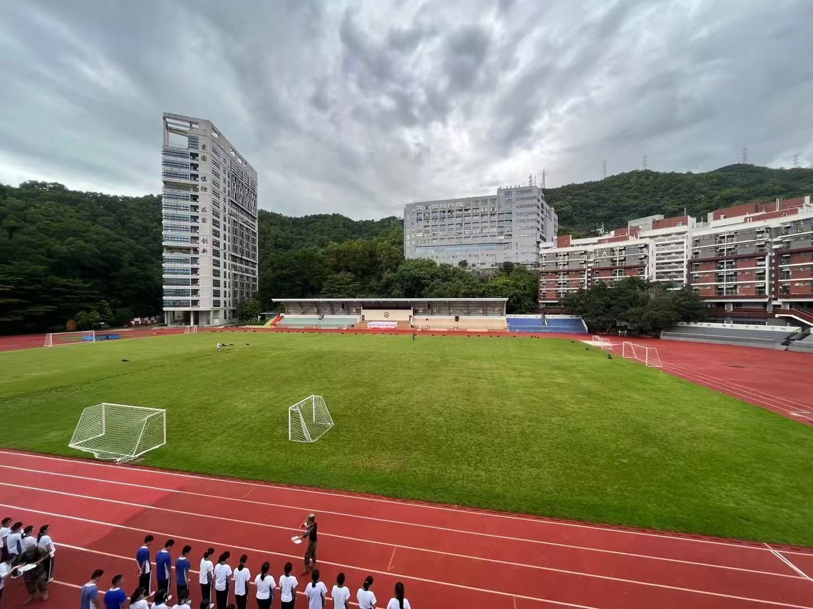
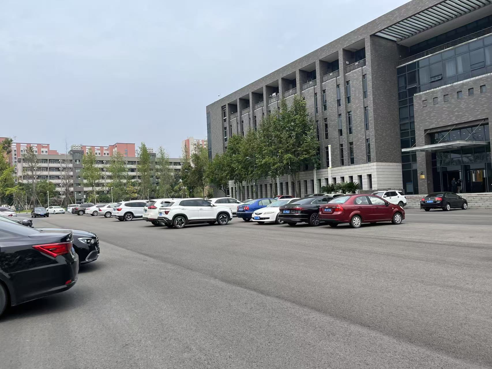

High school: Hong Ling
红岭中学是深圳市一所享有盛誉的重点中学，以其卓越的教学质量和丰富的校园文化而闻名。学校拥有先进的教学设施，汇聚了一批经验丰富的教师团队，致力于培养具备国际视野和创新精神的学生。红岭中学注重素质教育，鼓励学生在学术、体育、艺术等多个领域全面发展，并在各类竞赛中屡获佳绩。学校秉承“崇德尚学、追求卓越”的办学理念，致力于为社会培养具有责任感和创造力的优秀人才。
University: Sichuan University
四川大学位于中国四川省成都市，是一所历史悠久、学科齐全的“双一流”重点建设高校。学校由原四川大学、原成都科技大学和原华西医科大学合并而成，学科涵盖文、理、工、医等多个领域，综合实力位居全国前列。川大以“海纳百川，有容乃大”为校训，注重学术创新与人才培养，拥有众多国家级重点实验室和研究基地。学校校园环境优美，文化底蕴深厚，为社会输送了大量优秀人才，在国内外享有广泛声誉。
University: University of Pittsburgh
click to learn more
匹兹堡大学(University of Pittsburgh,简称 Pitt)是一所位于美国宾夕法尼亚州匹兹堡市的世界知名研究型大学，创立于1787年，历史悠久，学术实力雄厚。作为美国顶尖公立大学之一，Pitt 在医学、工程、计算机科学、商学、法学等多个领域享有盛誉，尤其以医学和生物医学研究见长，旗下的匹兹堡大学医学中心（UPMC）是全球领先的医疗机构。学校倡导创新与实践相结合，为学生提供丰富的科研和实习机会。Pitt 以其开放包容的学术氛围和优美的校园环境，吸引了来自世界各地的优秀学子。